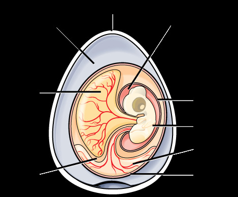
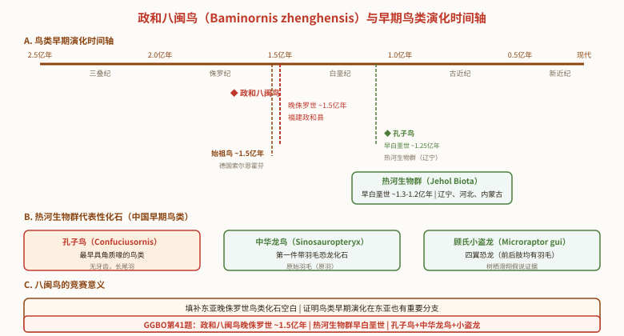

三、鸟类的繁殖行为与起源
（一）繁殖行为概述
鸟类的繁殖具有明显的季节性，并有复杂的行为。鸟类的繁殖行为包括：占据巢区、筑巢、求偶、交配、孵卵和育雏。
鸟类性成熟年龄与种群死亡率有关：死亡率越高的鸟类，性成熟年龄越小，窝卵数也越多（r-对策倾向）。普通鸟类每年繁殖一窝，少数如麻雀、家燕一年可繁殖多窝；热带食谷鸟类甚至几乎终年繁殖。
鸟类的繁殖受内外环境条件刺激的影响以及神经内分泌的控制：光照（外部因子）→神经整合→下丘脑释放因子→垂体（FSH、LH、TSH、催乳激素等）→性腺（性类固醇）→生殖行为。12～14h光照对脑下垂体分泌和产卵刺激最大。

（二）求偶与配偶制度
雄鸟通常通过鲜艳羽毛、诱人鸣叫、雄姿及别致巢穴赢得雌鸟欢心，一般是雄鸟主动。配偶制度有三种：
- 单配（一夫一妻）：多数鸟类为此类型。多数配偶关系维持到繁殖期终了、雏鸟离巢为止。
- 一雄多雌：少数种类，如松鸡、环颈雉、蜂鸟、织布鸟。
- 一雌多雄：极少数，如三趾鹑、彩鹬。
终生配偶的鸟类较少，如企鹅、天鹅、雁、鹳、鹤、鹰、鸮、鹦鹉、乌鸦、喜鹊、山雀等。
（三）占据巢区（领地）
占区的意义是为了安全和充足的食物，保护后代提高成活率。占区成功的雄鸟往往也是求偶的胜利者。领地大小可变——从雀形目几百平方米到鹰、鹫几平方公里不等，与营巢适宜地域、种群密度、食物资源有关。占领巢区的行为往往同时也是求偶炫耀行为。
（四）营巢
巢穴为产卵、孵卵和育雏提供保温而安全的栖身之地，绝大多数鸟类有营巢行为。营巢可分独巢和群巢（与空间资源、食物资源、防御天敌有关，空间资源是主要因素）。
我国常见鸟类的巢穴类型主要有四类：地面巢、水面浮巢、洞巢和编织巢。
- 地面巢：鸡类、鸵鸟等在地面简单营巢（多为早成鸟）。
- 水面浮巢：䴙䴘等水禽在水面筑浮巢。
- 洞巢：啄木鸟、鹦鹉、猫头鹰等在树洞营巢。
- 编织巢：织布鸟、缝叶莺等精巧编织悬挂巢。
（五）产卵、孵卵与育雏
每种鸟在巢内所产满窝卵的数目称窝卵数，有种的稳定性但受气候、食物影响。鸟类存在两种产卵类型：
- 定数产卵：每一繁殖周期只产固定数目窝卵数，有遗失也不补产。如鸠鸽、环颈雉、喜鹊、家燕。
- 不定数产卵：未达满窝卵数前若有遗失即补产，直到产满固有窝卵数。如鸡、鸭、鸵鸟、麻雀。饲养的卵用家禽就是利用此特性。
孵卵：通常由雌鸟担任，或雌雄轮流，企鹅等少数由雄鸟孵卵。除鹅、鸭、企鹅等外，参与孵卵的亲鸟腹部均有孵卵斑——腹部羽毛脱落、真皮层加厚、血管增多造成，利于提高体温传给卵。孵卵斑数目1～3个，同种一致，可作为分类和判断亲缘关系的依据。测定孵卵时卵温为 34.4～35.4℃。
孵卵期：大型鸟较长（家鸡21天、家鸭28天、鹅31天、鹰类29～55天），小型鸟较短（雀形目10～15天）。
（六）早成雏 vs 晚成雏
雏鸟可分为早成鸟和晚成鸟两类：
- 早成鸟：孵出时即充分发育，被有密绒羽，眼已张开，能独立行走，绒羽干后即可随亲鸟觅食。大多数地栖鸟类和游禽属此（鸡形目、雁形目、鹤形目）。
- 晚成鸟：出壳时尚未充分发育，体表光裸或微具稀疏绒羽，眼不能睁开，需亲鸟喂食。雀形目、攀禽、猛禽等筑巢隐蔽或凶猛的鸟类属此，育雏时多以昆虫为主食。鸽形目虽陆栖但属晚成鸟（靠鸽乳喂养）。
| 项目 | 早成鸟 | 晚成鸟 |
|---|---|---|
| 绒羽 | 被密绒羽 | 光裸或稀疏绒羽 |
| 眼睛 | 已张开 | 不能睁开 |
| 行动 | 能独立行走 | 不能独立，需留巢 |
| 觅食 | 随亲鸟觅食 | 需亲鸟喂食（多以昆虫为主） |
| 代表 | 鸡形目、雁形目、鹤形目 | 雀形目、攀禽、猛禽、鸽形目 |
| 巢型关联 | 地面巢、水面浮巢 | 洞巢、编织巢 |
（七）鸟类的进化特征和地位
进化特征：高而恒定的体温，双循环，高代谢率，减少对外界环境的依赖；具羽能飞翔，主动适应环境能力强；具有发达的繁殖方式和行为，后代成活率高。
进化地位：鸟类起源于古代爬行类（兽脚类恐龙），是恒温、飞翔的高级脊椎动物类群。
（八）鸟类的起源——始祖鸟
1861 年在德国巴伐利亚第一次发现了距今 1.45 亿年前晚侏罗纪地层中的鸟类化石——始祖鸟（Archaeopteryx）。始祖鸟的特征介于爬行类和鸟类之间，是爬行类到鸟类的过渡型（中间类型），为鸟类起源于爬行类提供了关键化石证据。
始祖鸟与爬行类相似的特征（保留的原始特征）：
- 无喙，具槽生齿（现代鸟无齿无喙）；
- 椎体双凹型；
- 长而灵活的尾，有 18～21 枚分离的尾椎骨（现代鸟尾椎愈合成尾综骨）；
- 肋骨不具钩状突（现代鸟肋骨有钩状突）；
- 前肢有 3 枚彼此分离的掌骨，指端具爪（现代鸟掌骨愈合、指端无爪）；
- 腰带各骨不愈合（现代鸟腰带愈合）。
始祖鸟与鸟类相似的特征（进步特征）：有羽毛、有翼、有龙骨突（胸骨发达）、前肢成翼、眼窝大等。这些说明它已具备飞翔的基本条件，故归入鸟类（古鸟亚纲）。
| 特征 | 始祖鸟（爬行类特征） | 现代鸟类（进步特征） |
|---|---|---|
| 口 | 无喙，具槽生齿 | 具角质喙，无齿 |
| 椎体 | 双凹型 | 异凹型（马鞍形） |
| 尾 | 长尾，18～21枚分离尾椎 | 尾椎愈合成尾综骨 |
| 肋骨 | 不具钩状突 | 具钩状突 |
| 前肢 | 3枚分离掌骨，指端具爪 | 掌骨愈合，指端无爪 |
| 腰带 | 各骨不愈合 | 腰带愈合（开放式骨盆） |
| 羽毛/翼 | 有羽毛、有翼（鸟类特征） | 羽毛发达、翼发达 |
鸟类繁殖与起源考点速记
繁殖行为六环节：占区→筑巢→求偶→交配→孵卵→育雏；多数一夫一妻，少数终生配偶（天鹅、鹤、鹰等）。巢型四类：地面巢/水面浮巢/洞巢/编织巢。产卵两型：定数产卵（不补产，鸽、喜鹊）vs不定数产卵（补产，鸡、鸭、麻雀）。孵卵斑可作分类依据。雏鸟两型：早成鸟（密绒羽、眼开、能走，鸡雁鹤）vs晚成鸟（光裸、眼闭、需喂，雀形目、攀禽、猛禽、鸽）。起源：始祖鸟（1861年德国，晚侏罗纪1.45亿年），爬行类→鸟类过渡型——具槽生齿、双凹椎体、长尾、肋骨无钩突、掌骨分离指端有爪、腰带不愈合（爬行类特征）＋羽毛翼龙骨突（鸟类特征）。
政和八闽鸟化石（Baminornis zhenghensis）——最早期鸟类化石的发现（GGBO第41题竞赛前沿）
政和八闽鸟（Baminornis zhenghensis）的发现：
- 发现地点：福建省政和县，晚侏罗世地层（距今约1.5亿年），与始祖鸟（Archaeopteryx）年代相近。
- 分类地位：鸟纲（Aves），是最早的鸟类之一。其发现将鸟类的早期演化历史从欧洲（始祖鸟）扩展到东亚地区。
- 化石特征：八闽鸟保留了部分原始特征（如牙齿），但已具有与现代鸟类相似的肩带结构和飞行适应特征，代表了鸟类早期演化的重要阶段。
鸟类早期演化的中国化石群：
- 热河生物群（Jehol Biota）：早白垩世（约1.3-1.2亿年），分布于辽宁、河北、内蒙古，产出大量带羽毛恐龙和早期鸟类化石——孔子鸟（Confuciusornis）（最早具角质喙的鸟类）、中华龙鸟（Sinosauropteryx）（第一件带羽毛恐龙化石）、顾氏小盗龙（Microraptor gui）（四翼恐龙）。
- 八闽鸟的竞赛意义：①填补了东亚地区晚侏罗世鸟类化石的空白，证明鸟类早期演化在东亚也有重要分支；②与始祖鸟同期，表明鸟类在侏罗纪已有广泛的古地理分布；③为鸟类起源于兽脚类恐龙的假说提供了新的证据支撑。
